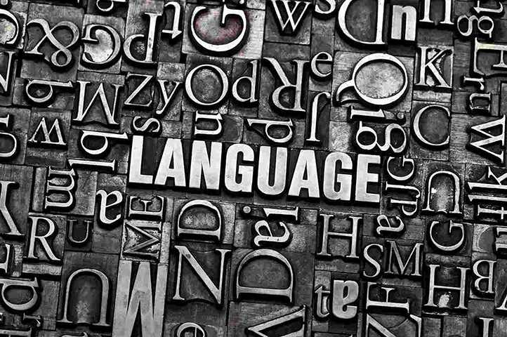

Our Policy
We are convinced, that any text deserves to be translated like poetry or literature. By this we mean, that simple replacement of the words is not enough. What matters most, is to transfer into another language exactly what the author had in mind and what effect he or she had been after. Such approach is most important in the case of any publications (on paper or digital) which contain information, marketing or scientific content. Further, we intensly belive, that the CAT (Computer Assissted Translation) tools alone cannot do the job. We use them, appreciate their robust development, but we could not stress more the crucial role of a living person. We know, that only someone for whom the target language is the mother's tongue, who lives and functions in the target country, plus preferably is familiar with the translation topic – has a chance to get close to perfection. And this is what we are after!
-
Websites and Content Localization
We localize the content published in the web, which means, that we not only translate it, we also edit in the way allowing the desired interpretation by local recepients. We advice on the content itself, and on the design best suited for the particular market. If nedded, we translate internet content directly in source code.
-

Printed and Digital Publications
Apart from the top quality translation, we can also provide the end-to-end services regarding its publication in the desired format, or formats: website or webpage, traditional printed brochure or a book, digital book in any of the popular formats, as well as audiobooks or films.
-
We Strive to Conform to Local Culture
Based on materials provided by the client, we thoroughly investigate the target recepients. We take time to establish the clients' group characteristics, local customs, and traditions. We not only custom tailor the content, we also want to know, which connotations, images, sometimes even colors are better to be avoided.
How Does It Go
First of all, we work with a client to define the subject and the scope of the project. Further, based on what was established, we prepare the detailed list of goals to be achieved and the timetable. This phase can take a few days to even a month. This is because the top quality of our translations is based on close collaboration with partners spread around, literally, the whole world. The final version of anything we do is always verified by a professional native speaker, translator, proofreader, expert in the area of the original content.
Contact
Should you consider publication of any materials in the foreign language, and would want to get the best result – we are at your service. Please get in touch either by phone or by email, preferably in the English language. However, we are open for communication in any other language. Just send us an email specifying your language in the subject line.
Email: biuro@akitatranslations.comTelefon: +48 601 760 591